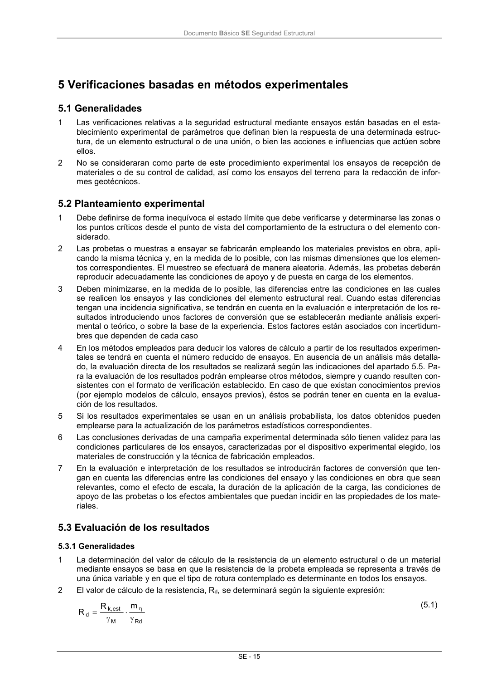

DB-SE Seguridad estructural · edición 2019-12-20 · capa oficial
Documento DB-SE-oficial · SHA-256 del PDF ec1fbfc51b28c4d62667aec480585b76fe31727ccf1615015a5d2d2677763f8f
Página física 21 de 45.
Copia fiel del PDF fuente · Fuente oficial
Ficha de la disposición en la fuente oficial
Formato: Texto de la página (Markdown)
Documento Básico SE Seguridad Estructural SE - 15 5 Verificaciones basadas en métodos experimentales 5.1 Generalidades 1 Las verificaciones relativas a la seguridad estructural mediante ensayos están basadas en el esta- blecimiento experimental de parámetros que definan bien la respuesta de una determinada estruc- tura, de un elemento estructural o de una unión, o bien las acciones e influencias que actúen sobre ellos. 2 No se consideraran como parte de este procedimiento experimental los ensayos de recepción de materiales o de su control de calidad, así como los ensayos del terreno para la redacción de infor- mes geotécnicos. 5.2 Planteamiento experimental 1 Debe definirse de forma inequívoca el estado límite que debe verificarse y determinarse las zonas o los puntos críticos desde el punto de vista del comportamiento de la estructura o del elemento con- siderado. 2 Las probetas o muestras a ensayar se fabricarán empleando los materiales previstos en obra, apli- cando la misma técnica y, en la medida de lo posible, con las mismas dimensiones que los elemen- tos correspondientes. El muestreo se efectuará de manera aleatoria. Además, las probetas deberán reproducir adecuadamente las condiciones de apoyo y de puesta en carga de los elementos. 3 Deben minimizarse, en la medida de lo posible, las diferencias entre las condiciones en las cuales se realicen los ensayos y las condiciones del elemento estructural real. Cuando estas diferencias tengan una incidencia significativa, se tendrán en cuenta en la evaluación e interpretación de los re- sultados introduciendo unos factores de conversión que se establecerán mediante análisis experi- mental o teórico, o sobre la base de la experiencia. Estos factores están asociados con incertidum- bres que dependen de cada caso 4 En los métodos empleados para deducir los valores de cálculo a partir de los resultados experimen- tales se tendrá en cuenta el número reducido de ensayos. En ausencia de un análisis más detalla- do, la evaluación directa de los resultados se realizará según las indicaciones del apartado 5.5. Pa- ra la evaluación de los resultados podrán emplearse otros métodos, siempre y cuando resulten con- sistentes con el formato de verificación establecido. En caso de que existan conocimientos previos (por ejemplo modelos de cálculo, ensayos previos), éstos se podrán tener en cuenta en la evalua- ción de los resultados. 5 Si los resultados experimentales se usan en un análisis probabilista, los datos obtenidos pueden emplearse para la actualización de los parámetros estadísticos correspondientes. 6 Las conclusiones derivadas de una campaña experimental determinada sólo tienen validez para las condiciones particulares de los ensayos, caracterizadas por el dispositivo experimental elegido, los materiales de construcción y la técnica de fabricación empleados. 7 En la evaluación e interpretación de los resultados se introducirán factores de conversión que ten- gan en cuenta las diferencias entre las condiciones del ensayo y las condiciones en obra que sean relevantes, como el efecto de escala, la duración de la aplicación de la carga, las condiciones de apoyo de las probetas o los efectos ambientales que puedan incidir en las propiedades de los mate- riales. 5.3 Evaluación de los resultados 5.3.1 Generalidades 1 La determinación del valor de cálculo de la resistencia de un elemento estructural o de un material mediante ensayos se basa en que la resistencia de la probeta empleada se representa a través de una única variable y en que el tipo de rotura contemplado es determinante en todos los ensayos. 2 El valor de cálculo de la resistencia, Rd, se determinará según la siguiente expresión: Rd M est k, d m R R (5.1)
